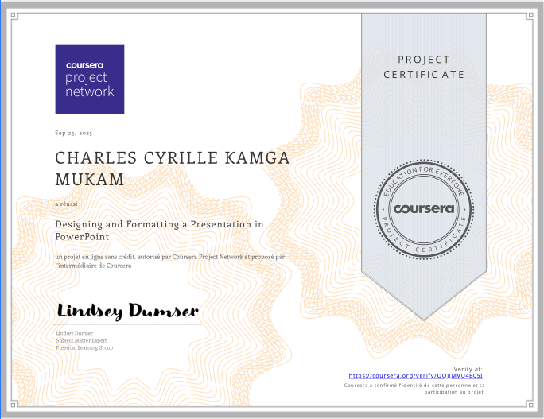
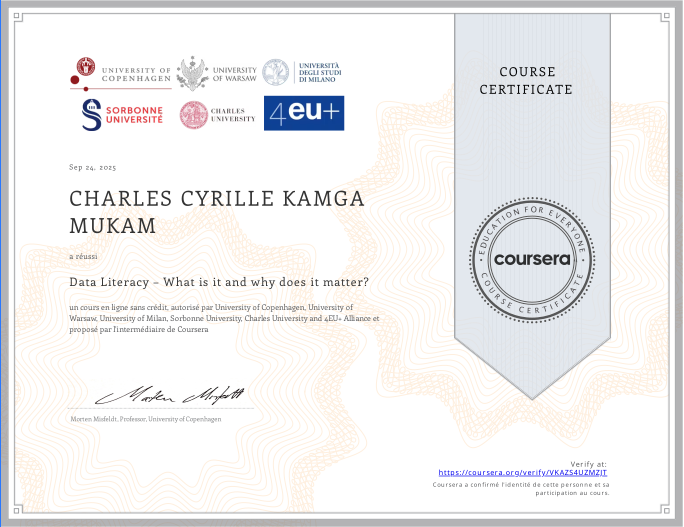
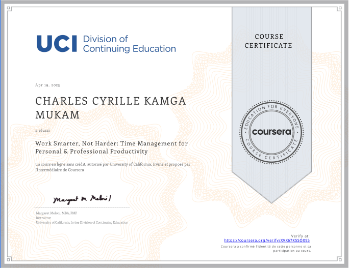
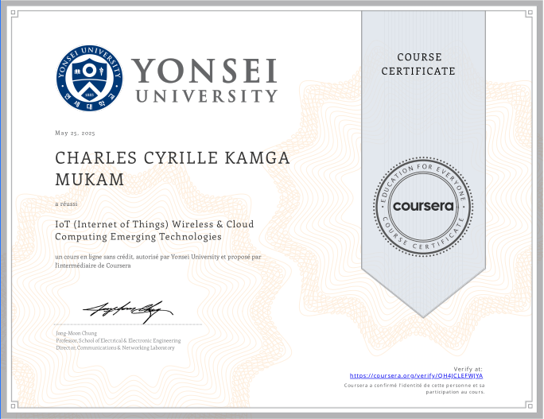
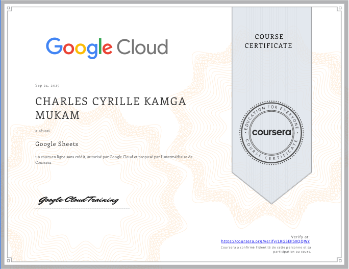
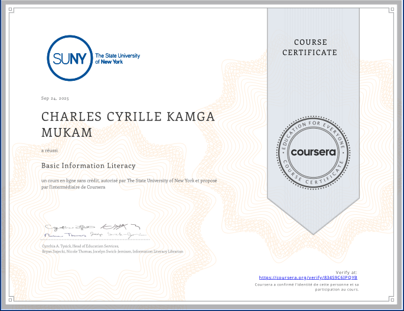
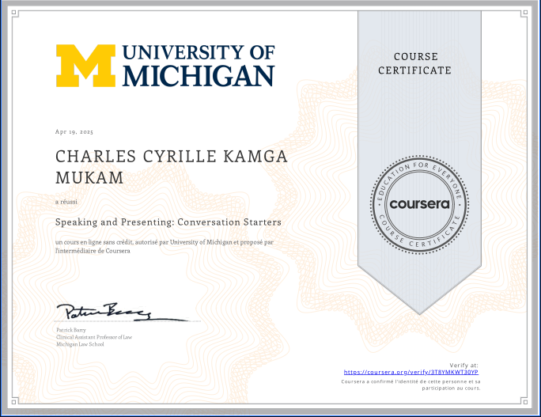
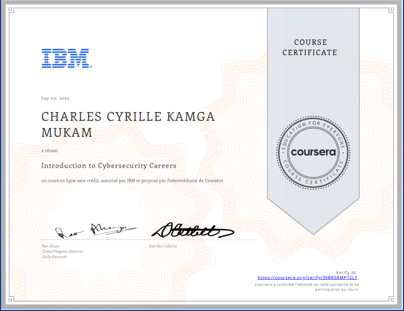

Mes Certifications
Découvrez mon parcours d'apprentissage continu à travers ces certifications qui reflètent mon engagement envers le développement professionnel et l'acquisition de compétences clés dans les domaines de la technologie et du numérique.
Digital Marketing Principles
Digital Marketing Institute
Leadership Skills Development
Leadership AcademyCloud Computing Fundamentals
Cloud Security AllianceData Analysis Essentials
Data Science CouncilPython Programming Intro
Python Institute

Web Development Fundamentals
Coursera Project NetworkProject Management Basics
Project Management InstituteData Literacy European Universities
European University Alliance

Work Smarter Not Harder UCIrvine
University of California, Irvine

IoT Wireless Cloud Computing Yonsei
Yonsei University

Google Sheets Fundamentals
Google

Google Drive Essentials
GoogleCreate Budget Google Sheets
GoogleBasic Information Literacy SUNY
State University of New York

Getting Started with Microsoft OneDrive
MicrosoftSpeaking and Presenting UMichigan
University of Michigan

Introduction to Cybersecurity Careers IBM
IBM
